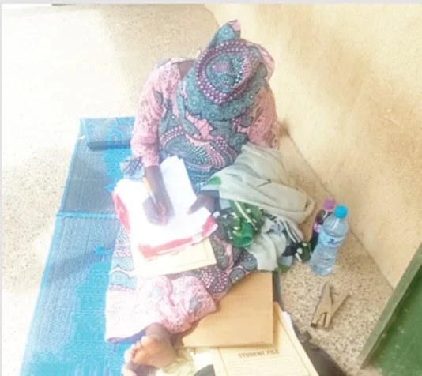

Beside Adamawa Government House, school battles decay, thirst

Beside Adamawa Government House, school battles decay and thirst
Dougirei Secondary School, in Yola North Local Government Area, is less than 100 metres behind the Adamawa State Government House. Yet pupils and staff face deteriorating classrooms, insufficient desks and chairs, no functional water supply and a shortage of other basic facilities. During a visit, teachers and some students were seen working under trees, while the staff room shared by the junior and senior sections was described as too cramped for personnel.
Classroom ceilings are falling apart, raising concerns about safety. The school has no working water supply, leaving its toilets closed and students to use nearby bushes. It also lacks an examination hall: students sitting external examinations, including WAEC and NECO, have had to do so outdoors, using stones as seats. Staff said science subjects are taught without a laboratory, limiting opportunities for practical lessons. Some teachers bring mats to use as seats and work surfaces.
Flooding adds to the difficulties during the rainy season. Water discharged through drainage pipes from Government House is reportedly channelled into the school grounds, sometimes disrupting lessons and prompting the management to suspend activities over safety concerns. Parents-Teachers Association chairman Alhaji Mohammed Usman said he had written several times to the Ministry of Education without receiving a satisfactory response.
The school’s condition has prompted questions about how the state’s education priorities are being implemented. The administration has introduced free education and school feeding in boarding schools and has announced plans for model secondary schools across the state’s 21 local government areas. Budget figures cited in the report show education allocations of N17.32bn in 2020, N24bn in 2021, N17.3bn in 2022, N26.8bn in 2023, N15.603bn in 2024, N40.41bn in 2025 and N40.63bn in 2026. Stakeholders are calling for greater transparency over how the funding is used and for action on basic school infrastructure. The education commissioner was unavailable for comment, and calls had not been returned by the time the report was filed.
Source: Punch